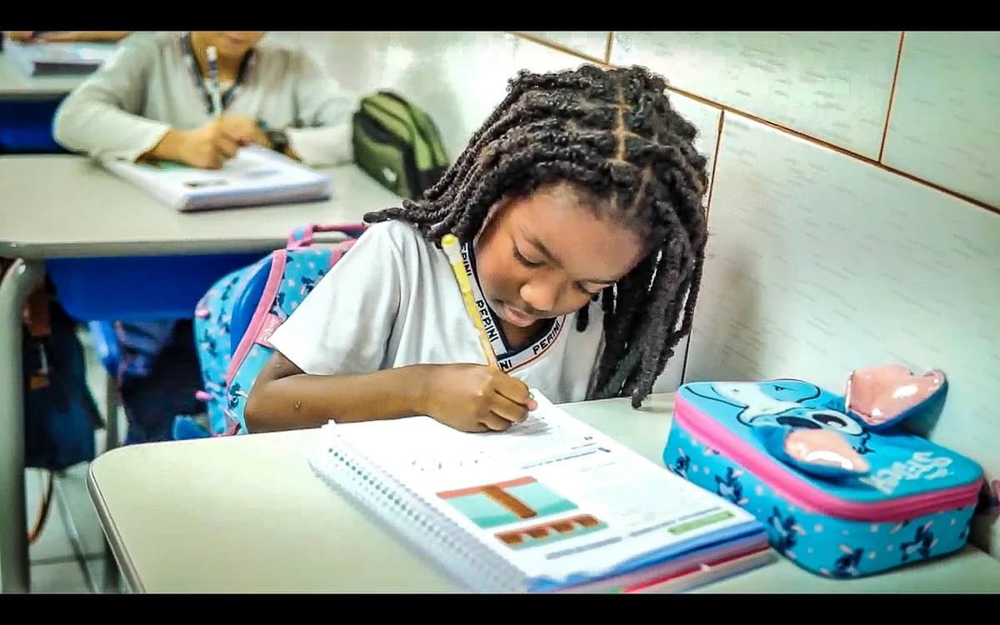
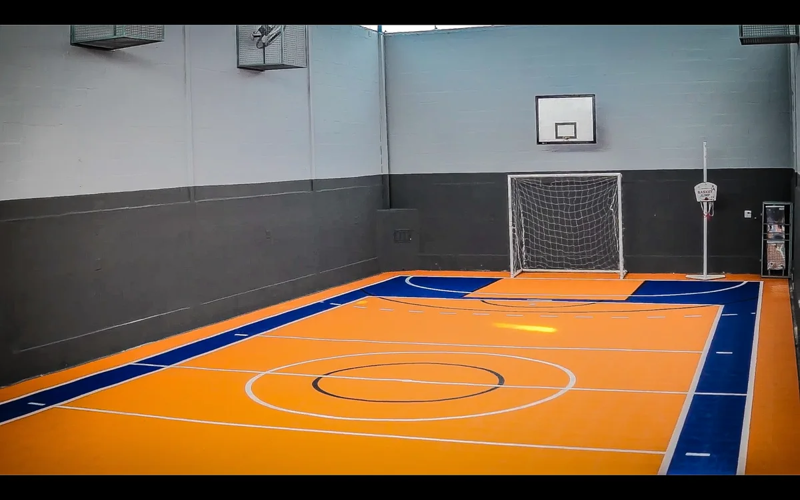
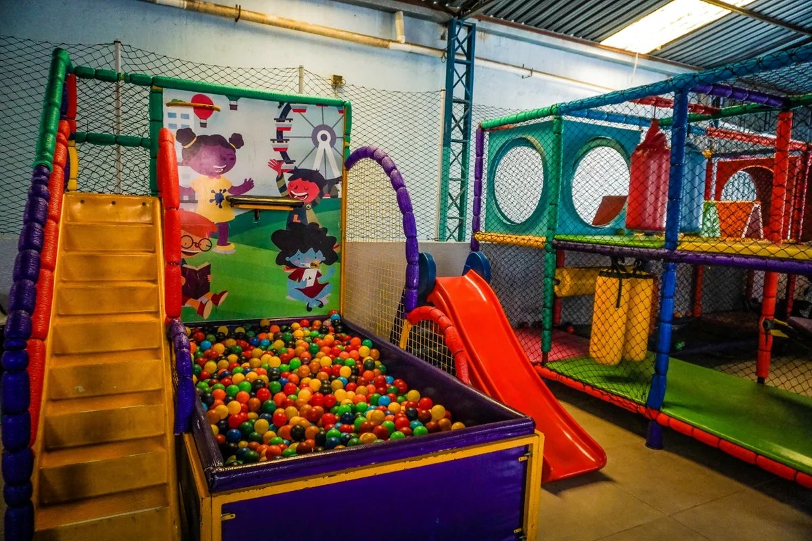
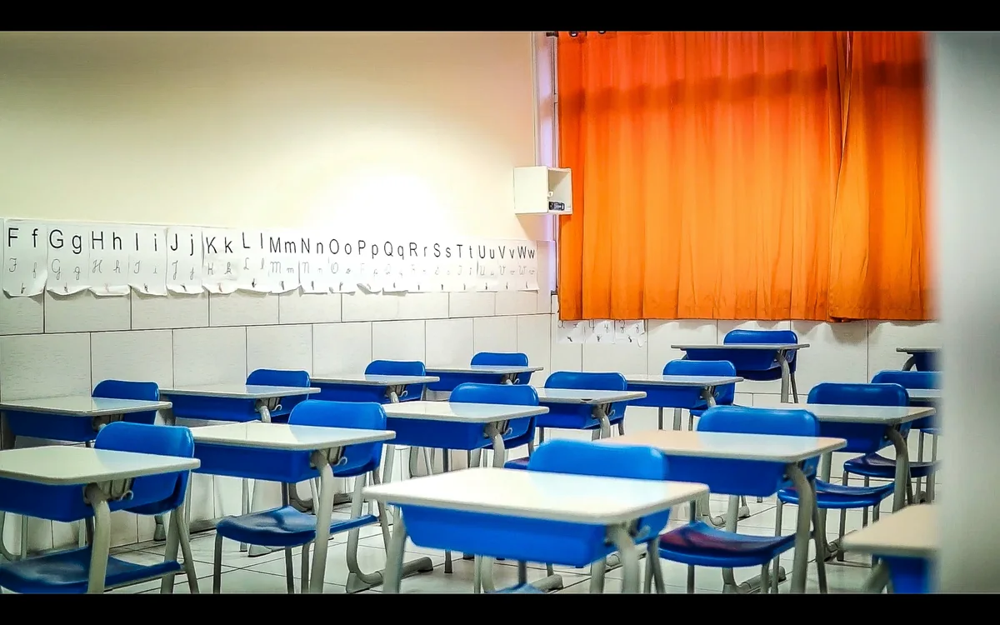
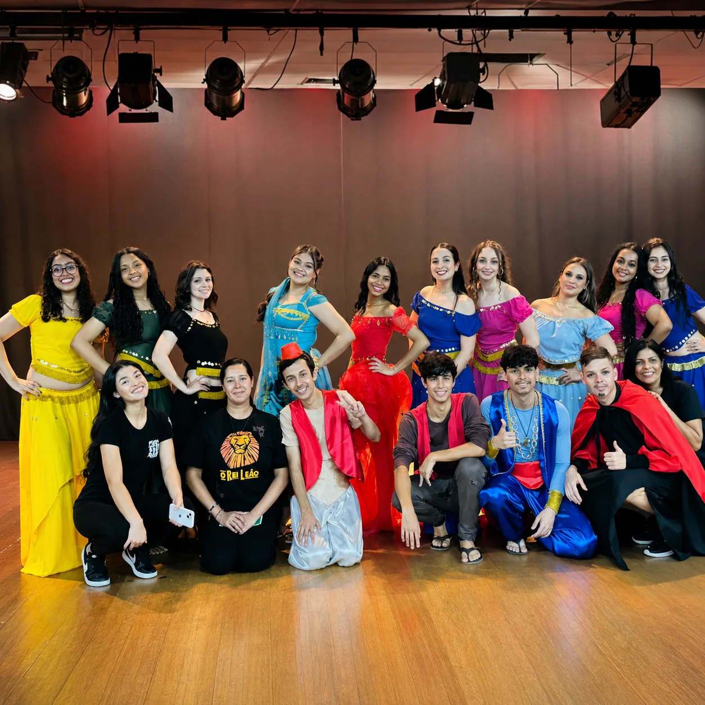
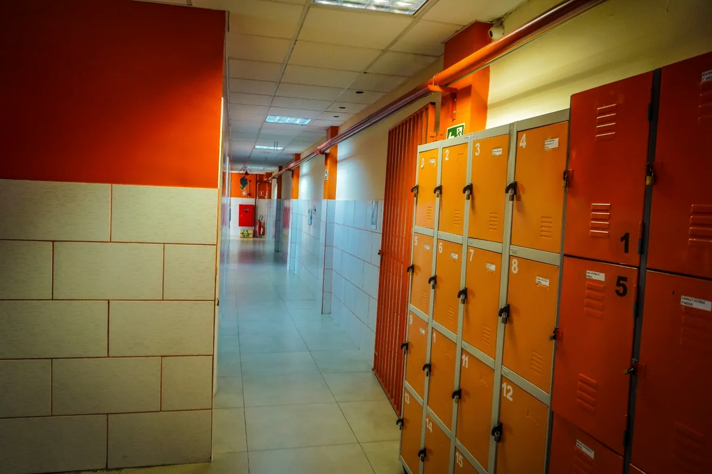
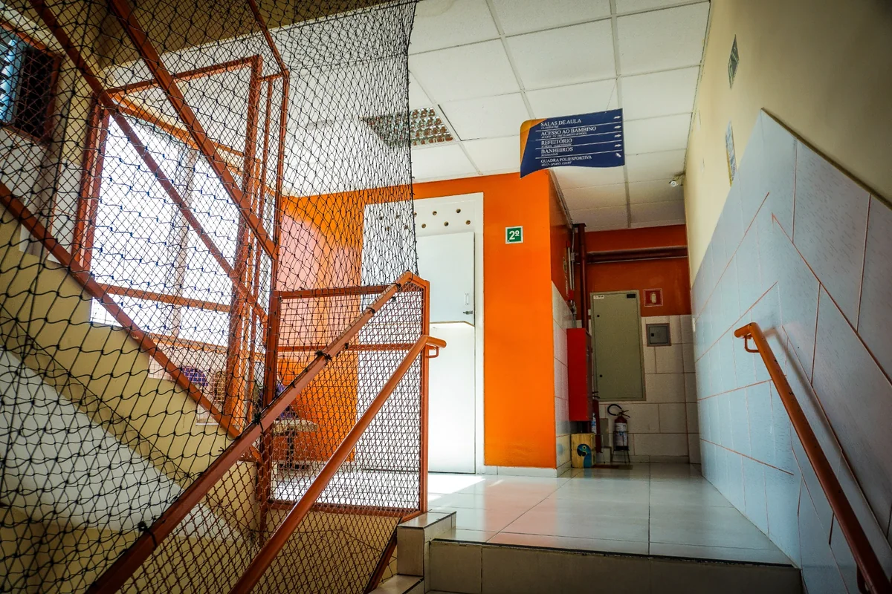
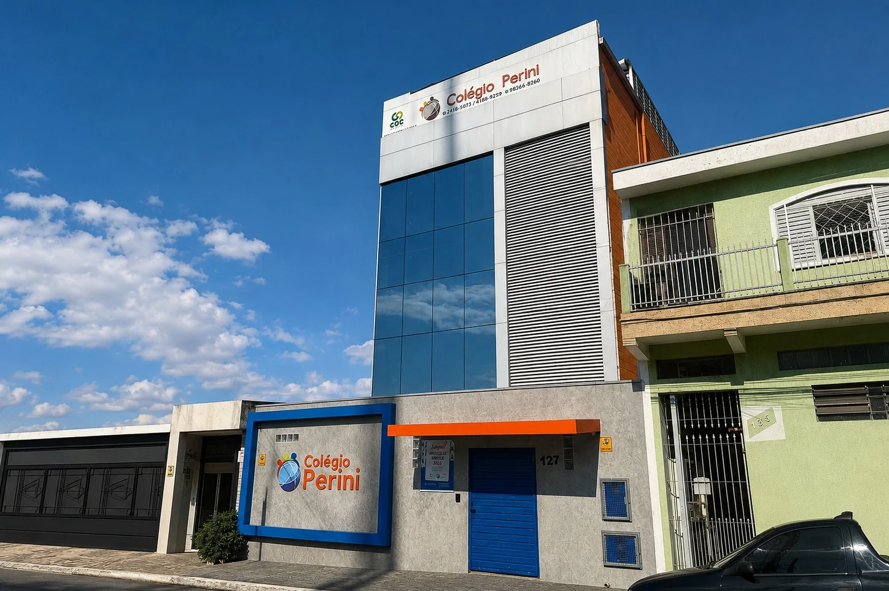

Aprender com organização
Salas e circulação apoiam uma rotina clara, com ambiente preparado para estudo e acompanhamento.
No Perini, os ambientes apoiam estudo, convivência, movimento e organização da rotina — para que a estrutura faça parte da experiência de aprender.



Uma escola não é melhor pela quantidade de espaços, mas pela forma como eles sustentam a rotina. No Perini, sala, convivência, movimento e organização cumprem papéis diferentes ao longo do dia.
Salas e circulação apoiam uma rotina clara, com ambiente preparado para estudo e acompanhamento.
Quadra e áreas de recreação ampliam a experiência para além da carteira e do material didático.
Estrutura, orientação e espaços de apoio ajudam a tornar a rotina mais previsível para alunos e famílias.

Pesquisa, cultura, ciência, tecnologia e cidadania aparecem em experiências que conectam teoria e prática.
Atividades culturais, convivência e trabalho de campo mostram diferentes formas de participar, criar e aprender.



Circulação, armários e sinalização não precisam ser protagonistas para fazer diferença. Eles ajudam a organizar o uso dos ambientes e a rotina dentro da escola.
Conheça os espaços em uma visita


R. Adão Gonçalves da Costa, 127. A visita é a melhor forma de entender a estrutura no contexto da rotina escolar.
Agende uma visita, conheça os ambientes e converse com a equipe sobre a rotina de cada etapa.